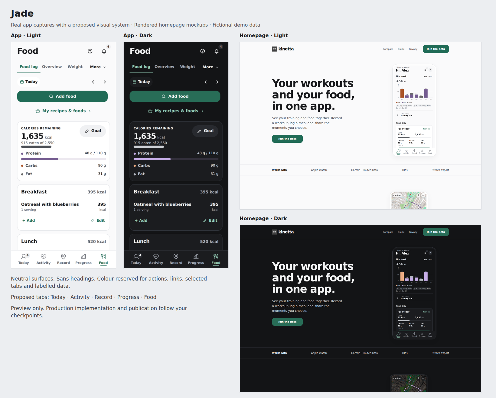
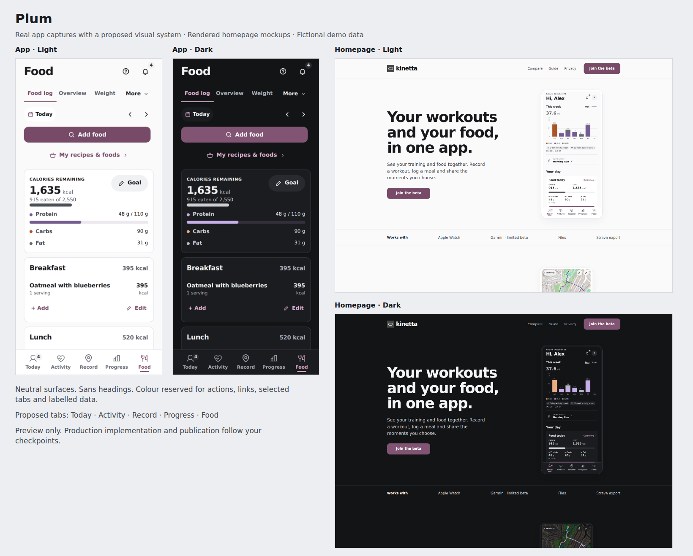
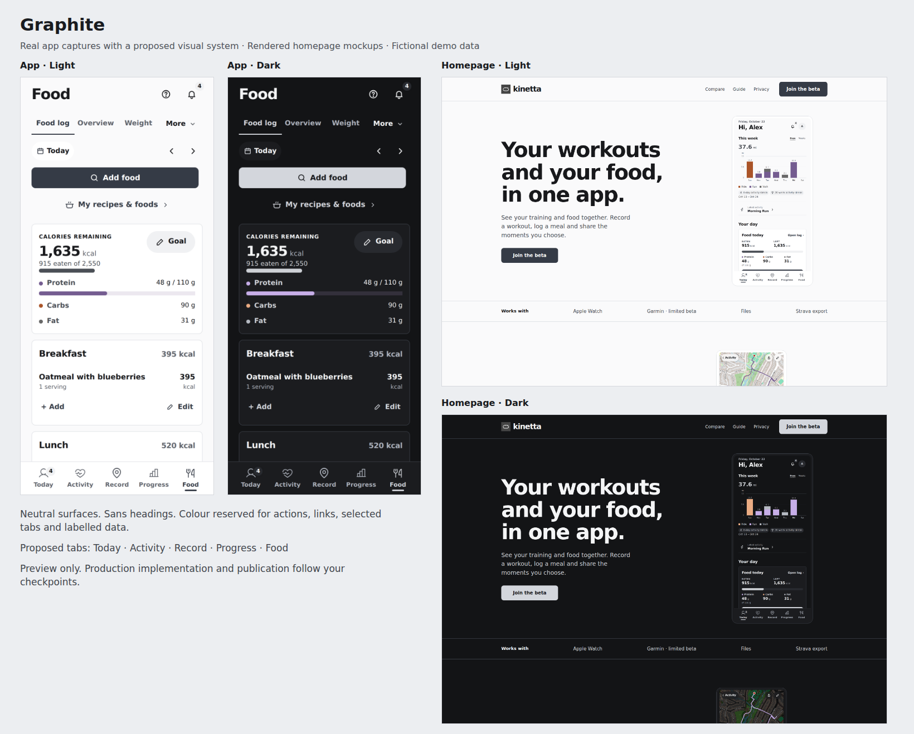
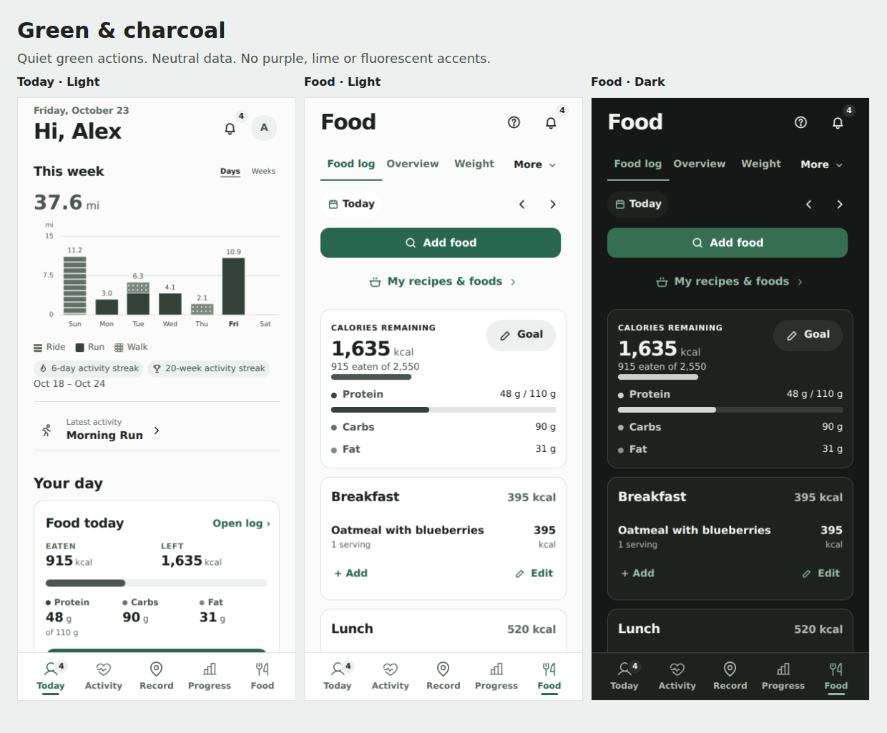
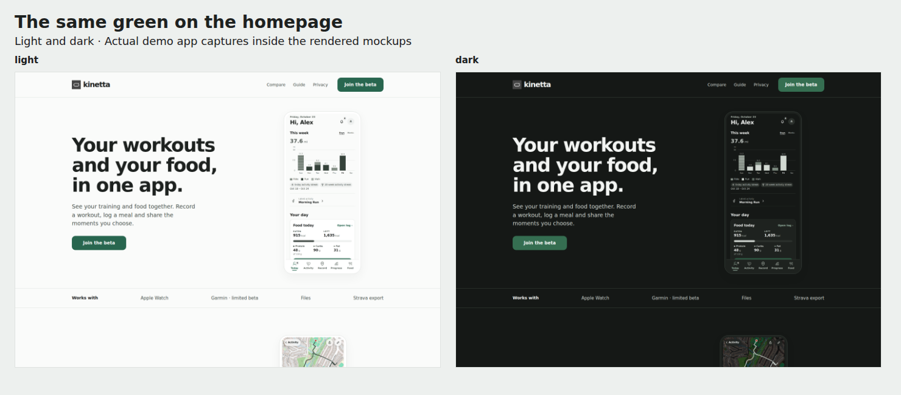
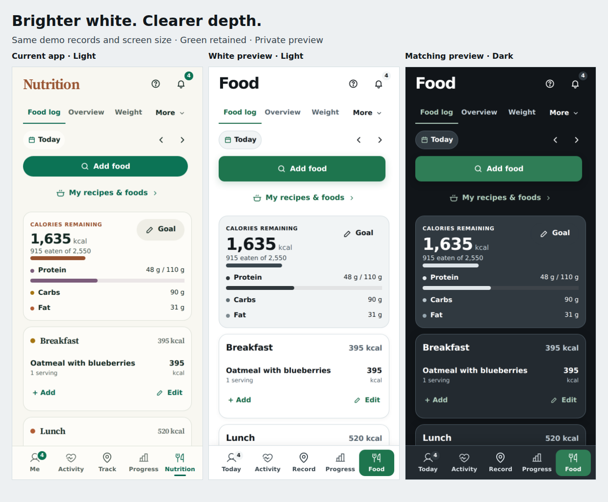
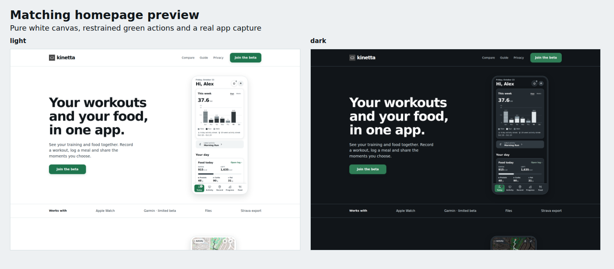
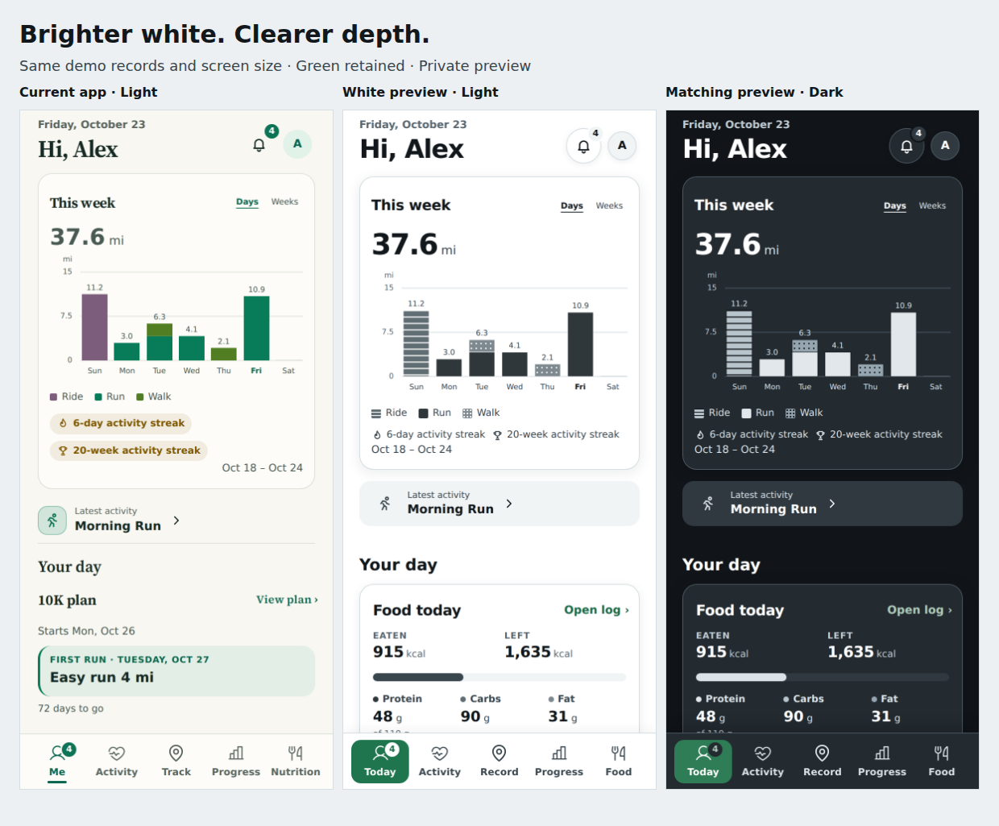

All five design choices
Review only · 23 October 2026. A–D were rejected. E responds to the latest feedback but is not approved. None changes the app or website. Screenshots show fictional demo data; app captures use preview styling, and homepage captures are rendered mockups. Existing image captions are historical, not approval or release claims.
The latest preference is green without neon or purple, a brighter app without the off-white canvas, and more definition. Research informs hierarchy and usability; it cannot choose a personal colour preference.
Decision sheet · External research and limits · App and launch review · Verification · Completed Claude review · Claude brief
A · Jade
Rejected: retained for comparison

App: Today, Food, workout and friends: full-size light and dark screenshots
Homepage: desktop and mobile: full-size light and dark screenshots
B · Plum
Rejected: purple conflicts with current preference

App: Today, Food, workout and friends: full-size light and dark screenshots
Homepage: desktop and mobile: full-size light and dark screenshots
C · Graphite
Rejected: retained for comparison

App: Today, Food, workout and friends: full-size light and dark screenshots
Homepage: desktop and mobile: full-size light and dark screenshots
D · Green & charcoal
Rejected: the restrained revision still felt wrong

Homepage light and dark overview

App: Today, Food, workout and friends: full-size light and dark screenshots
Homepage: desktop and mobile: full-size light and dark screenshots
E · Brighter white & green
Latest proposal; unapproved

Homepage light and dark overview

Today: current app → white proposal → dark proposal

App: Today, Food, workout and friends: full-size light and dark screenshots
E · Brighter white & green · today · lightE · Brighter white & green · today · darkE · Brighter white & green · food · lightE · Brighter white & green · food · darkE · Brighter white & green · activity · lightE · Brighter white & green · activity · darkE · Brighter white & green · friends · lightE · Brighter white & green · friends · dark Homepage: desktop and mobile: full-size light and dark screenshots
E · Brighter white & green · home-full · lightE · Brighter white & green · home-full · darkE · Brighter white & green · home-phone · lightE · Brighter white & green · home-phone · dark Additional evidence
D greyscale chart · light · D greyscale chart · dark · E workout/feed board
Current app reference
Captured with the same demo records as E. No changes have been applied.
Current today · lightCurrent today · darkCurrent food · lightCurrent food · dark Open the decision sheet for the remaining choices. Checkpoint 1: select or refine a visual direction before implementation. Checkpoint 2: approve the homepage mockup separately before publication. This package authorizes neither implementation nor publication.